Capital de Minas Gerais, importante centro cultural, econômico e político do estado.
População - 2,5 milhões
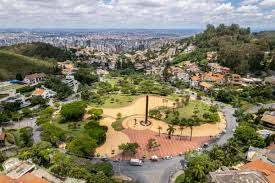 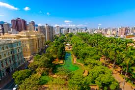 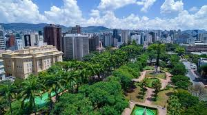Importante polo de logística, educação e agronegócio no Triângulo Mineiro.
População - 720 mil
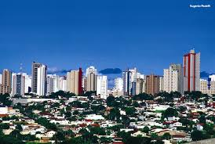 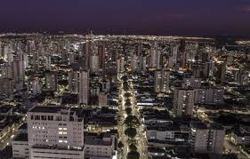 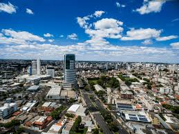Grande centro industrial e parte da Região Metropolitana de Belo Horizonte.
População - 670 mil
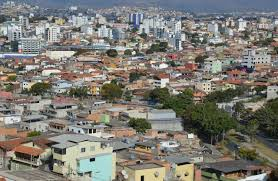 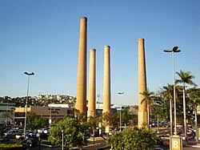Reconhecida pela sua tradição em educação, serviços e indústria.
População - 580 mil
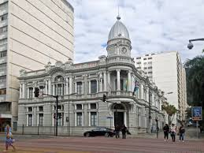 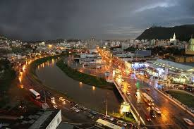 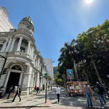Importante polo industrial, com destaque para a indústria automobilística.
População - 450 mil
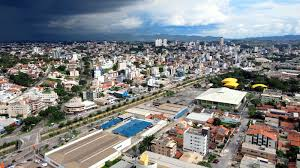 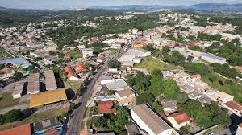 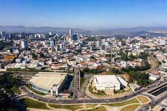